How Diablo's town portal came alive again, and why most of it stayed as Blizzard North drew it.
4 min read
One hit point left, a pack of Fallen behind you, and a 200-gold scroll from Adria. Read it, a blue door opens, and Tristram is on the other side. We used that scroll more than any sword.
A sticker on the ground
When we first upscaled the game, the portal went through 4x-SGI with everything else (more on that in our items post). Drag the divider:
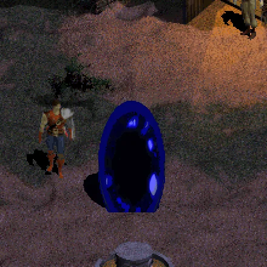
Diablo (1996)Upscaled
Tristram in the 1996 light. Only the portal changes.
Sharper, and that's about all. The beaded rim went soft grey, the sparks pale yellow, and the whole thing looked like a sticker on the ground.
As kids we saw something else in it: mysterious, almost alive, the way home. We wanted that back.
Peeking next door
So we looked at what Blizzard did with it in the later Diablo games:
Diablo IIWhite-hot rim, dark see-through middle. It opens as a thin line, then wobbles and swirls. Alive, and still a mystery. Video: DevUrandom
Diablo II: ResurrectedA thin crackling ring, almost black inside, blue light on the floor. Very alive, a bit busy. Video: Gamelisk
Diablo IIIPretty, but light blue inside, so it reads as a lamp. To us, the least magical. Video: FinalSolarFlare
Diablo IVGrows out of an orb, wisps burn off the rim, the strongest light on the ground. The most alive, and the furthest from 1996. Video: Dvalin
Most of them share a few things:
A dark inside. The hole is what makes it a door. Ours: black, with only the ripples in it.
A blue glow. In a brown world, that's the way out. Ours: one saturated blue, no grey left.
A whitish rim. The edge looks hot. Ours: white in the ring where it's hottest.
Light on the ground.Ours: a cold pool at its foot.
They open from a point: a line, an orb, a flash. Ours: a flash as it tears open.
They never sit still, as if calling your name. Ours: a heartbeat every 2.4 seconds.
The 1996 portal already has the dark and the blue. So we set a rule: seventy percent stays as Blizzard North drew it, meaning the shape, all 32 frames, only its own colours and the black hole. The other thirty is ours: light, motion, the edge.
The thirty percent
We worked on it round by round: try a handful of versions, pick one, try new ones on top of it. Eighteen rounds, well over a hundred versions. The ones that moved it forward:
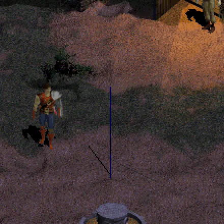
1996Up123456789101112
Step: Diablo (1996)
Where we started: Tristram, 1996.
Mockups on frames of the game, with what we saw in each round and what we tried next. From step 1 on, the portal lights the ground.
What made it in:
The sprite. We threw the upscale away and rebuilt every frame from the 1996 pixels, no model involved: the same outline smoothed, round beads, crisp sparks, no grey or yellow left. It uses only 8 of the 22 colours the 1996 portal has. One frame:
Sprite
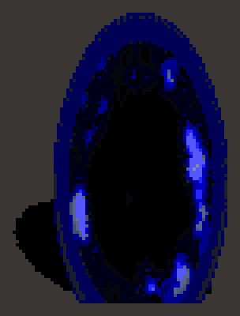
One frame of the 1996 sprite, every pixel drawn four times larger. The grey is just the background.
Then the light and the motion, switched on one at a time in the game. Tristram at night:
Switch on
The white rim. Everything on: this is the portal in the game.
Each step keeps the ones before it. Captured in the game, every step at the same moment.
The white rim, the one thing we took from the sequels. Diablo IV's wisps changed the 1996 portal too much (they're with the dead ends below), but the white around the edge of the newer portals fit.
Lazarus' portal. In 1996 it's the blue one with every colour swapped for red, pixel for pixel. Ours is the same swap, with red light in place of blue. No white rim: white on red goes pink, and pink is not what you want before Lazarus.
Dead ends
Most of them. Each added something the 1996 portal never had, covered the black or left its blue:
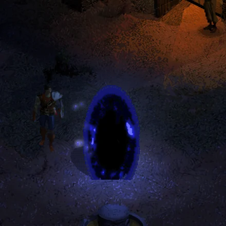
Rising motes
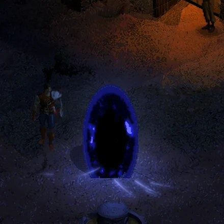
Strokes across the floor
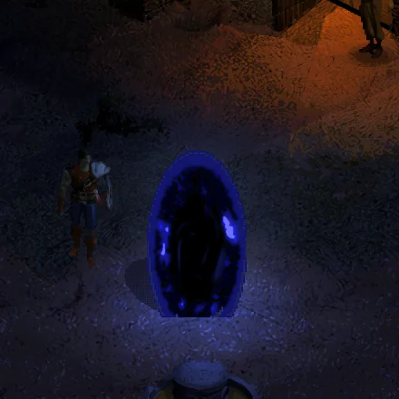
A veil over the black
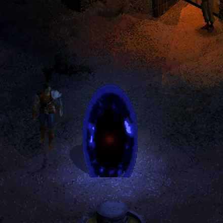
A far light, hinting where it leads
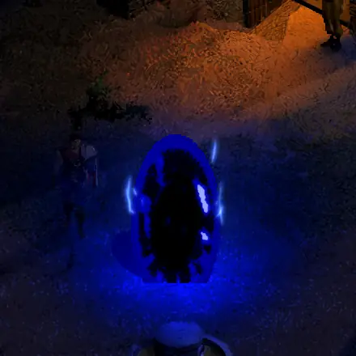
Diablo IV's wisps
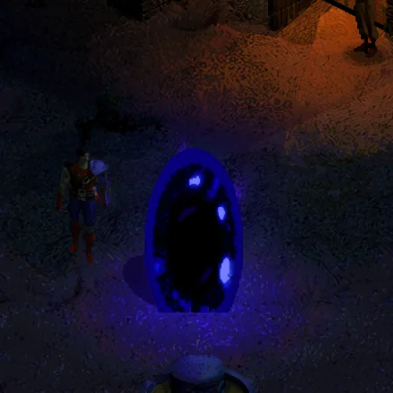
Toward indigo
Mockups.
What broke on the way in
In the game, the floor first turned cyan:
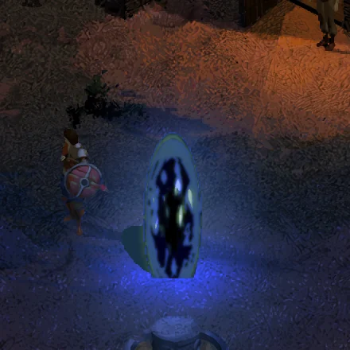
In the game
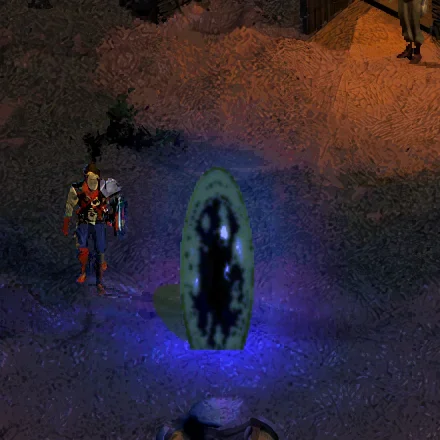
The mockup
Our first take in the game at the tear, beside the mockup.
In our lighting a coloured light sets the floor's colour, so our blue-white flash turned the dusk ground cyan. Now the flash only adds blue.
And the night came out navy:
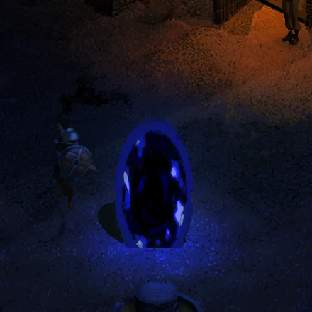
In the game
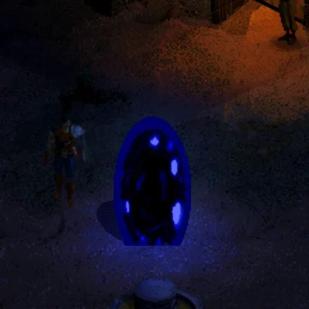
The mockup
Our first take at night, beside the mockup.
We'd used one glow for every hour, but at night the portal's glow needs about nine times the blue it has at dusk. Now the glow follows the town's clock.
Press H
In the game, next to Diablo (1996), from the moment it opens. Pick a scene and drag the divider:
Scene
Diablo (1996)Brutal Diablo
Tristram at dusk. As it opens, the light on the ground reaches the hero.
Press H in the game and the 1996 portal is back, exactly as it was.
Watch the 27-second version of this post:
Does it call your name? Tell us on our Discord, especially if we overdid it. Brutal Diablo is free and coming early 2027.
Thanks
To Blizzard North, for the door we walked through a thousand times. To the DevilutionX folks, who keep Diablo running today. To our supporters on Ko-fi, who help us move forward. And to everyone who leaves a heart or a kind comment under our posts: some days that's the dopamine hit we badly need.
Tips
Brutal Diablo will be free once released. Throw a coin and it goes into dev time, GPU hours and coffee.
This mod is a love letter to the original game, so nothing here is for sale. But every tip really helps us keep the development going. Thank you.